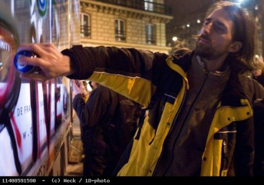

| |
Site dédié à la publication d'informations communiquées par le Collectif des déboulonneurs. En aucun cas ce site n'appelle à des actions illégales. | |
 |
||
|
Accueil du site > Paris > David Sterboul, militant radical, sensible et charismatique
Il y a des héros que l’on pleure froidement, le poing levé, le drapeau en berne. Il en est d’autres que l’on pleure de toutes les larmes de son corps. Parce qu’on les aime autant qu’on les admire. David Sterboul (1976-2009) en est un. Pourquoi ce déchaînement de tristesse violente depuis l’annonce de sa mort brutale ? Pourquoi ces gorges qui se nouent à tout moment de la journée ? Pourquoi ce cri de ses amis ? Cri de révolte. À l’idée de ce militant sublime – idéalisons-le sans vergogne, ça fait du bien et ça fait sens ! – chutant, ce 15 novembre, du haut de son neuvième étage parisien. Et devenant subitement, transmué par la mort, le plus « grand » d’entre nous. Fauché à 33 ans. L’âge du Christ – dont certains disaient qu’il avait la « gueule ». C’est vrai qu’il en avait la stature, la maigreur, les cheveux longs. Pas les yeux ! Ah, les yeux de David… ou plutôt son regard ! Un regard de cheval rétif. Si nous emportons de lui quelque souvenir, ce sera d’abord ces yeux de rebelle angoissé, d’hyperlucide tragique. Mais des yeux qui n’attendaient que ceux de ses compagnons pour retrouver une lueur d’indulgence, de tendresse, d’espoir, d’humour. Jusqu’à l’hilarité. Cet hypersensible, vulnérable et susceptible, demandait parfois à être un peu bousculé avant de lâcher l’éclat de rire, mais quand cela venait, cela ne venait pas à moitié, et cela vous emportait sur son passage. Ne dit-on pas qu’un chien blessé qui ne gémit pas est fichu ? Il en va de même d’un militant qui ne rit pas. Le rire de David, aussi, nous restera. Et ses sourires, pudiques ou généreux, mais sincères. Quels que fussent ses fronts de lutte – l’écologie politique (avec Chiche !), la « Vélorution », le nucléaire, les OGM, la vaccination, le féminisme, l’autogestion, les Jeux olympiques, les traînées chimiques du ciel, les brûle-cerveaux, vulgairement appelés « téléphones mobiles » (David avait jeté les bases d’un pamphlet sur le sujet), et surtout l’antipublicité, son principal combat de ces dernières années (avec le Collectif des déboulonneurs, Résistance à l’agression publicitaire et Le Publiphobe) –, cet « écologiste profond », comme il se définissait, a incarné des attitudes exemplaires et mémorables : intégrité, courage, détermination, rigueur, intelligence, non-violence, respect (par exemple à l’égard des policiers)… Autant d’atouts qui ont fait de cet éternel serviteur des causes le guide qu’il ne voulait pas être, un éveilleur de consciences malgré lui. Cet échalas au nez aquilin et au physique de sage indien inspirait confiance par son calme et sa profondeur, suscitait l’amitié par sa bienveillance et son désintéressement. Mais David n’a sans doute jamais autant donné sa mesure que dans l’antipublicité. Se distinguant aussi bien dans les déversements massifs de prospectus que dans le barbouillage de panneaux publicitaires dans un esprit de désobéissance civile. Ou dans un procès contre de nouveaux panneaux publicitaires espions du métro. Les millions d’usagers sauront-ils jamais que c’est grâce à lui que ces écrans animés qui devaient envahir les couloirs en 2009 ne l’ont pas fait ? Le mystérieux groupe « Ras la pub », qui avait, fin 2008, barbouillé clandestinement les quatre premiers spécimens, huit jours après leur inauguration en grande pompe, c’était… lui ! Toute la presse en avait parlé. Autre procès important dans la vie de ce publiphobe hors pair, subi celui-là, bien que « désiré » : la correctionnelle pour barbouillage en compagnie de six autres « Déboulonneurs ». Inoubliable David – tremblant d’émotion et vacillant sur ses longues pattes de poulain effaré – justifiant son acte en face de la juge, et devant une salle comble, par l’évocation de l’horreur répandue massivement dans les esprits par certaines affiches de cinéma, avec tous les dégâts psychiques qui s’ensuivent. Éveilleur de consciences, il le fut sans doute ce jour-là plus que jamais, et le verdict – un euro symbolique – montra plus tard que la juge n’avait pu que s’incliner devant l’insurrection digne, ferme et légitime des sept dissidents. Pour David, ancien élève d’école de commerce reconverti en photographe professionnel (aux reportages appréciés par la presse militante – Silence, Politis…), en quête de vérité et de simplicité, l’objectif, « utopique et révolutionnaire » de son propre aveu, était de faire tomber le « système marchand-technicien-productiviste », dont la publicité était à ses yeux la « clé de voûte ». Ce roseau… militant… qui ne plia jamais a fini par rompre… avant de voir le système tomber. Yvan Gradis, écrivain, publiphobe et barbouilleur (19 novembre 2009)

Un hommage lui sera rendu samedi 28 Entretiens avec David Sterboul :
|
|
Site utilisant SPIP - Hébergement Ouvaton
|